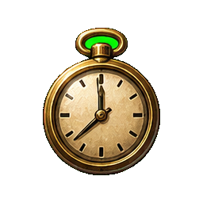
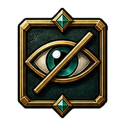
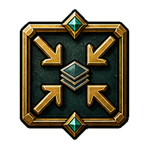

3.5-hour pacing helper
Elapsed: 0:00
Status: Not started
Scene: Start the session.
Segment: Start the session.
Session: Target 3:30; soft wall 4:00; hard wall 5:00.
Remaining: --
Break prompt: Ask the table as needed.


No active pacing notices.

Drop a role-first utility NPC into the current scene. Player display receives only the name and one-line description if you send it.
Drop a living-institution faction card into the current scene. Player Display only receives name, public face, and slogan if you send it.
Open a living-place card for the current scene. Player Display receives only the location name and player-safe read-aloud if you send it.
Open a loot, clue, prop, or asset card for the current scene. Player Display only receives SHOW text or earned TELL text when you send it.
Open clue/evidence cards for the current scene. Player Display receives only the image or SHOW text when you send it.